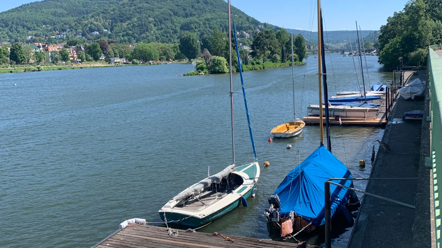

Unsere Touren in Heidelberg
Kategorie 1: Aktiv in der Natur

Kanutour auf dem Neckar
Heidelberg vom Wasser aus erleben- gemeinsam paddeln, Natur genießen, Stadt neu entdecken
- ⏱ ca. 2,5 Stunden
- ab 10 Jahre
Lauftreff in Heidelbergs schöner Natur
Joggend zu versteckten Highlights rund um Heidelberg- für Bewegungsfreudige mit Entdeckergeist
- ⏱ ca. 1,5 Stunden
- ab 16 Jahre
Sonnenaufgangstour auf den Heiligenberg
Morgenwanderung für Frühaufsteher- mit atemberaubender Aussicht über das Neckartal – inklusive regionalem Frühstückssnack
- ⏱ ca. 2 Stunden
- ab 14 Jahre
Kategorie 2: Für Entdecker:innen

Klassische Altstadtführung mit Schlossbesuch
Spannender Rundgang durch die historische Altstadt- mit ausführlichem Einblick in das Heidelberger Schloss
- ⏱ ca. 3 Stunden
- ab 12 Jahre
Kunst- & Kultur-Spaziergang
Spannender Rundgang durch die historische Altstadt- von Street Art bis Galerie
- ⏱ ca. 2 Stunden
- ab 12 Jahre
Kategorie 3: Für Studierende & Neuankömmlinge
Café-Tour: Heidelbergs charmanteste Ecken
Von gemütlich bis kreativ- wir zeigen euch die schönsten Spots zum Kaffeetrinken, Lernen und Leute treffen
- ⏱ ca. 2 Stunden
- ab 16 Jahre
Kneipen- & Barentour durch die Altstadt
Die besten Locations für einen gelungenen Abend- ideal zum Ankommen, Austauschen und Anstoßen
- ⏱ ca. 3-4 Stunden
- ab 18 Jahre